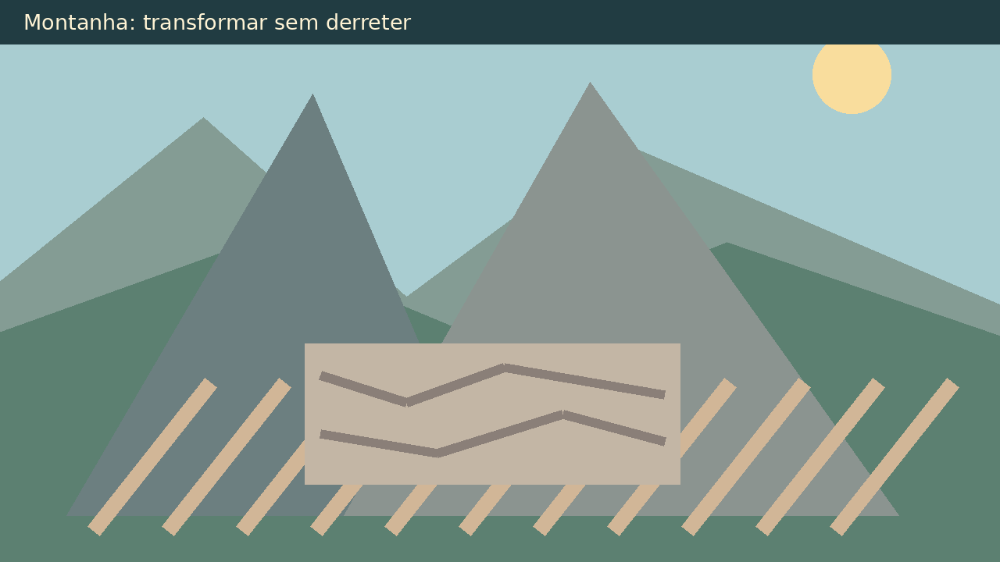

Observe a transformação
Calor e pressão podem mudar uma rocha sem fusão completa. Calcário pode originar mármore; arenito pode originar quartzito.

Observe a transformaçãoE se derreter?Ir para LaboratórioResolver as investigaçõesApoio de leitura diretoNo interior da crosta, calor e pressão podem mudar os minerais e a textura de uma rocha que já existia. Quando a transformação ocorre sem fusão completa, ela é chamada metamorfismo. Calcário pode originar mármore; arenito pode originar quartzito. Se a rocha derrete e o material fundido depois solidifica, a nova rocha é ígnea, não metamórfica. As rochas podem mudar ao longo do tempo geológico. Qualquer grupo pode produzir sedimentos por desgaste. Uma rocha pode sofrer metamorfismo sem derreter, ou pode fundir e depois solidificar. Não há uma fila obrigatória que toda rocha percorra. O nome do grupo depende do processo de formação da rocha investigada.
Calor e pressão podem mudar uma rocha sem fusão completa. Calcário pode originar mármore; arenito pode originar quartzito.
Se há fusão, o material passa a fundido. Quando ele volta a solidificar, forma rocha ígnea. Isso é diferente de metamorfismo.
Selecione para avançar à próxima cena.
Abrir cena →Use as evidências das cenas no percurso principal ou em Aprender de outro jeito. O resultado fica no percurso de atividades, separado desta exploração.
Abrir percurso →Acesso direto ao apoio com imagens, áudio, letras, palavras e frases. Não é preciso caminhar nem controlar um personagem.
Abrir percurso →Imagem: Ilustração didática autoral da produção pedagógica do Prof. André · CC BY 4.0 · illustration